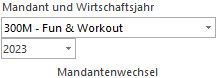
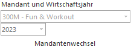

Über die Mandantenwechsel-Buttonleiste kann jederzeit ein Mandantenwechsel auf einen anderen Mandanten oder auf ein anderes Wirtschaftsjahr vorgenommen werden.

In den Auswahllisten werden alle vorhandenen Mandanten und dazu alle vorhandenen Wirtschaftsjahre des ausgewählten Mandanten angezeigt. Allerdings kann der Mandantenwechsel nur dann durchgeführt werden, wenn alle Fenster in allen Applikationen geschlossen sind. Ist das nicht der Fall, dann kann in der Buttonleiste auch keine Selektion vorgenommen werden.
Beispiel

Wird ein Mandantenwechsel durchgeführt, so wird im Mandanten in den gewechselt wird, immer das höchste vorhandene Wirtschaftsjahr aufgerufen.
Beispiel
Mandant 300M - höchstes Wirtschaftsjahr 2024
Mandant 500M - höchstes Wirtschaftsjahr 2023
Arbeitet man nun im Mandanten 500M im Wirtschaftsjahr 2023 und wechselt in den Mandanten 300M, so wird dort ebenfalls das Wirtschaftsjahr 2023 aufgerufen und nicht 2024.
Hinweis
Um immer das höchste Wirtschaftsjahr beim Mandantenwechsel zu erhalten, kann dies mittels Eintrag in der Datei "mesonic.ini" definiert werden.
[company]
AlwaysChangeToLatestYear=1
Wird dieser Eintrag nicht gesetzt oder steht der Eintrag auf "= 0", wird versucht in das gleiche Wirtschaftsjahr wie im Ausgangsmandanten zu wechseln.